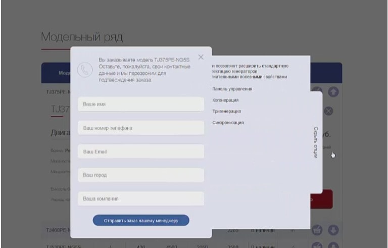

задача
Разработать солидный сайт ориентированный на b2b сектор. Целями проекта были поставлены:
- подать компанию как современного партнера, соответствующего европейскому уровню обслуживания
- качественная подача предложений продукции
- яркое заявление и продажа сопутствующих услуг
решение
Лаконичный и строгий дизайн в сине-красных цветах подчеркивают серьезность и надежность компании, а промо блоки больших размеров – солидность и размах.
Главная страница:
http://teksan.ru
Лаконичный и строгий дизайн в сине-красных цветах подчеркивают серьезность и надежность компании, а промо блоки больших размеров – солидность и размах.
Оформление заказа делают более приятным небольшие анимации:

посетить веб-сайт
Divan.tvрезультаты
После 3-х месяцев работы и 2-х итераций улучшений: